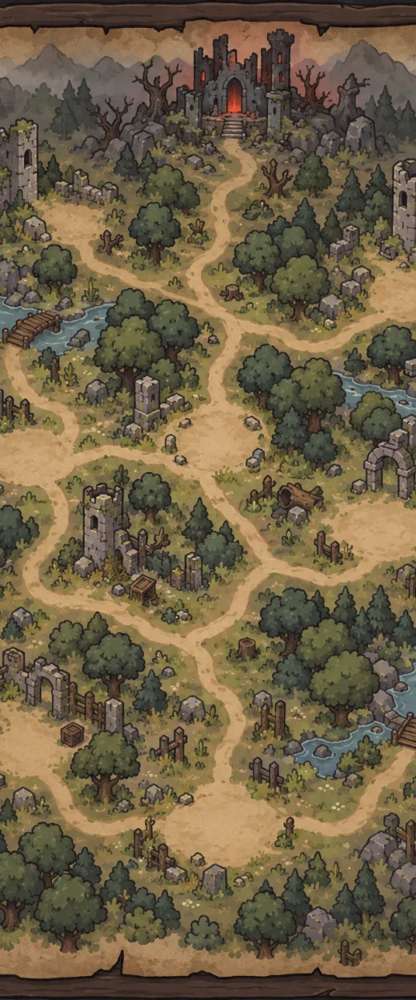
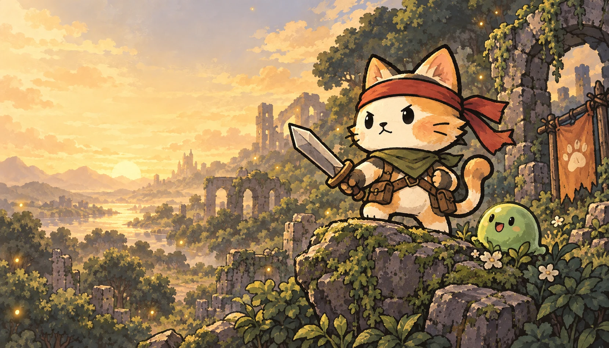
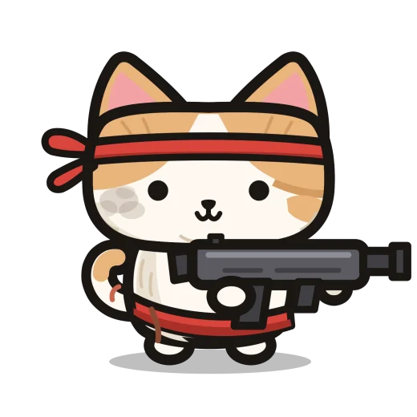
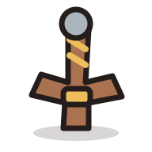
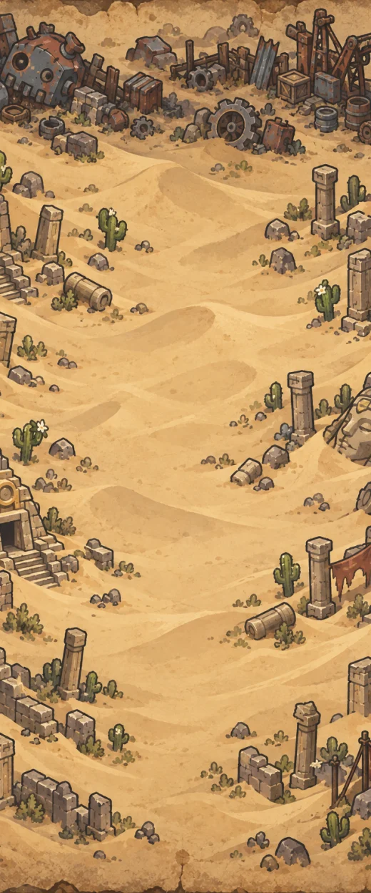
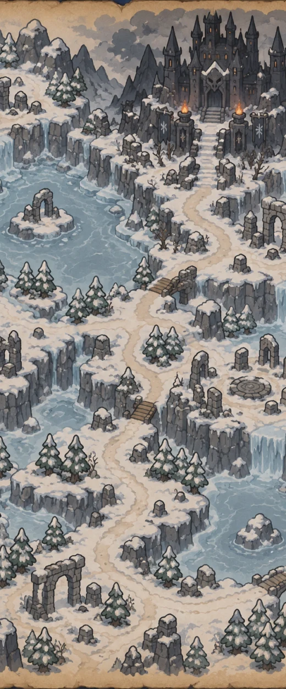

ACT 1
초록에 잠긴 폐허
작은 영웅의 첫 발자국.

귀여운 얼굴 뒤에 숨겨진 대담한 한 방.
폐허를 누비는 고양이 액션 로그라이크, 냥브로.
App Store · Google Play 출시 준비 중
한 걸음 앞에는 몬스터, 다음 갈림길에는 뜻밖의 행운.
어떤 길로 가고, 무엇을 챙길지는 모두 집사의 선택!
쏟아지는 탄막을 피하고, 나에게 맞는 무기와 유물을 모아
작은 고양이를 폐허의 영웅으로 키워 주세요.
손끝은 바쁘게, 선택은 신중하게. 매번 새로워지는 나만의 원정.
전투, 상점, 수상한 만남까지.
매번 다른 갈림길을 직접 선택해요.
공격은 자동으로, 회피는 내 손으로.
아슬아슬한 순간을 짜릿하게 뒤집어요.
무기에 장비와 유물을 더하면
나만의 전설이 완성돼요.
개발 중인 화면으로, 출시 버전에서는 일부 내용이 달라질 수 있습니다.

준비됐다냥. 가보자냥!
시원한 연사, 묵직한 한 방, 화려한 마법.
세 가지 무기에서 시작하는 전혀 다른 전투.
다가오는 적을 향해 쏟아지는 탄환. 전장을 누비며 공격을 이어가고, 위기의 순간엔 탄막 폭풍을 터뜨려요.
오버드라이브 탄막 폭풍
총 · 검 · 지팡이, 성장의 끝에는 9종의 전설 무기.
낯선 풍경, 새로운 적. 세 개의 막을 지나 나만의 이야기를 만나요.

작은 영웅의 첫 발자국.

뜨거운 모래 속, 낯선 만남.

차가운 바람 앞에서도 씩씩하게.
냥브로가 첫 모험을 준비하고 있어요.
출시 후 이곳에서 바로 만나요.
정식 출시 일정은 추후 안내할 예정입니다.
냥브로는 세로 화면으로 즐기는 고양이 액션 로그라이크예요. 자동으로 공격하는 고양이를 움직여 적의 공격을 피하고, 방마다 보상을 골라 성장해요. 원정 지도에서 다음 길을 선택하며 세 개의 막에 도전합니다.
네. 냥브로는 인터넷 연결 없이 즐기는 오프라인 게임이에요. 진행 상황과 설정은 플레이하는 기기에 저장됩니다.
현재 App Store와 Google Play 출시를 준비하고 있어요. 아직 출시일은 정해지지 않았으며, 스토어 등록이 완료되면 이 페이지의 다운로드 링크가 열립니다.